一、中国风的定义
中国风是建立在中国传统文化的基础上，蕴含大量中国元素并适应全球流行趋势的艺术形式或生活方式。
中国风的设计相较于其他设计风格，更符合大家从小耳濡目染的审美趣味。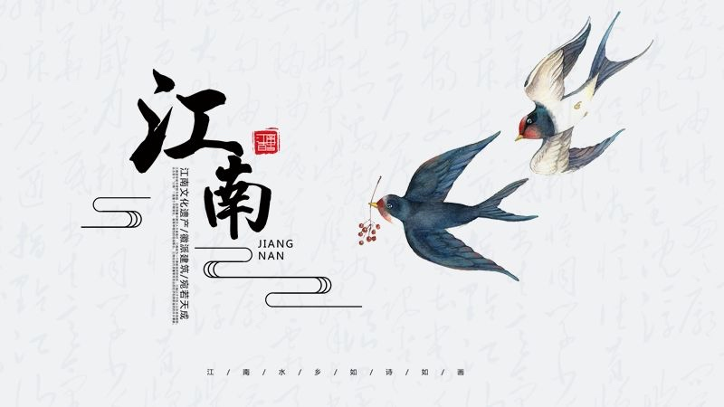
二、中国风元素
国人从小学课本到春节春联年画，不断接受传统文化的熏陶，而中国元素也是从传统文化生活中提炼出来的。
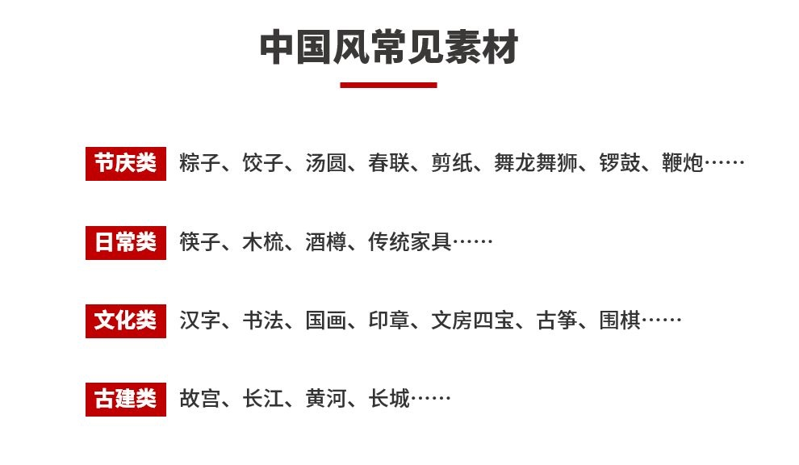
在设计中，可以通过提取中国传统图形，将其转化为画面中的元素，直观的体现中国设计风格。
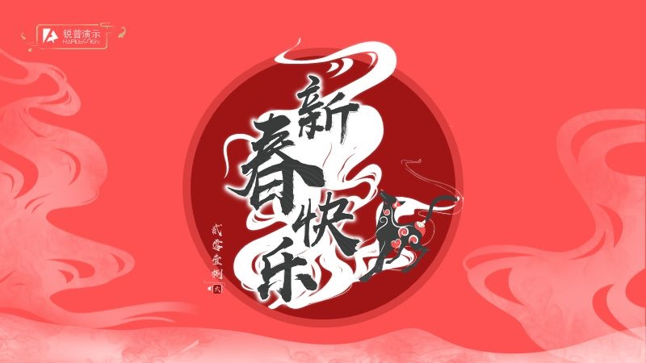
中国风PPT中，我们会经常看到笔刷素材的使用，很多图片也是以笔刷素材为原样，填充进去的，都是不规则的图片。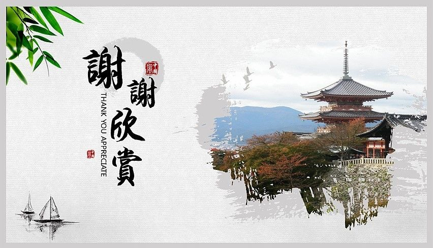
三、中国风颜色
红色和金色是中国最具有代表性的颜色，遇到节庆类型的时候，我们也多会采用此类色彩。
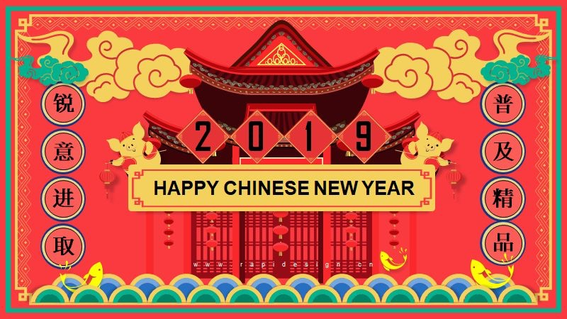
日常一些的会使用色彩饱和度不高的颜色，如水墨的相关色，一般在进行配色时会以设计主题进行色彩搭配，为画面营造较为统一和谐的氛围。
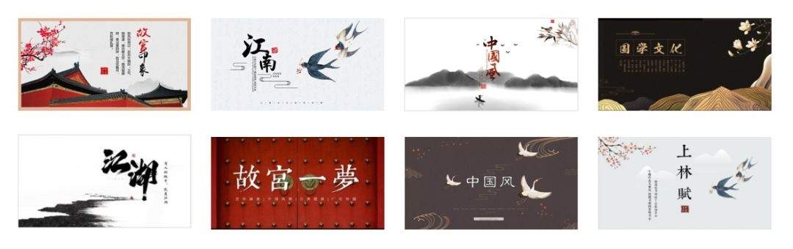
以水带墨、色墨碰撞渗化，形成画面一种灵动、氤氲、朦胧、含蓄耐读的水墨画。
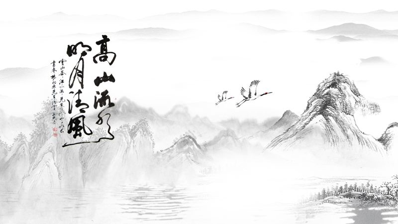
四、中国风字体
书法字体天生带有一种传统文化的气息，中国的书法字体是汉字特有的艺术形式，同一个文字用不同手法来写，传递出来的精神和意境是不同的，这使得汉字具有了很高的艺术美学价值。书法字体推荐汉仪尚巍手书、禹卫书法行书等；
衬线字体，有一种飘逸感，也带有一种中国味，衬线字体推荐方正清刻本悦简体、方正姚体等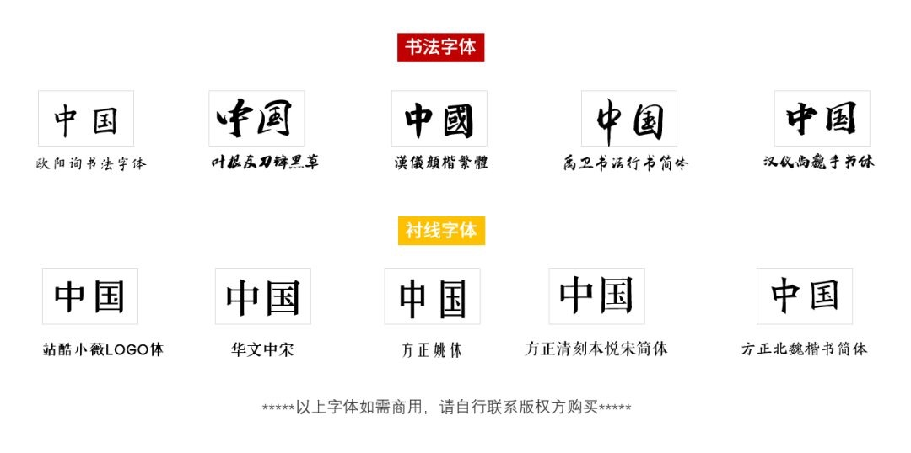
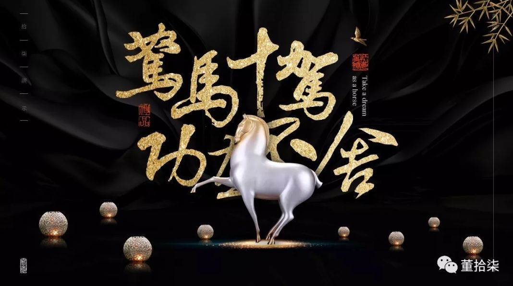
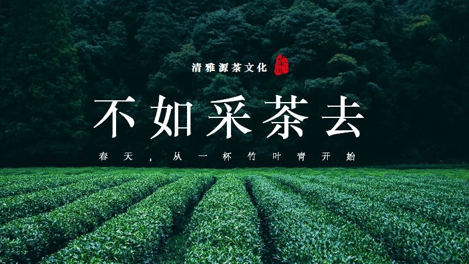
- 衬线字体 -
五、中国风排版
文字排版：中国古代的阅读习惯是从上自下，从右自左，所以在中国风的PPT排版上，也大多采用纵向排版。
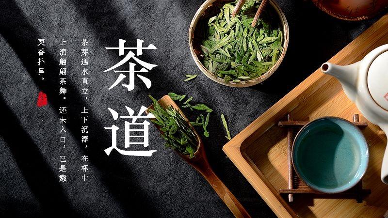
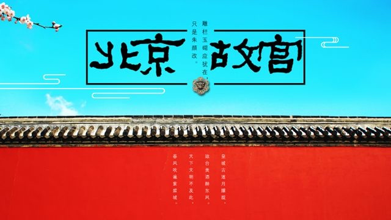
留白运用：中国风常用大面积的留白，以凸显传统、古朴的气质。同时利用留白将视线聚焦在主要想表达的地方。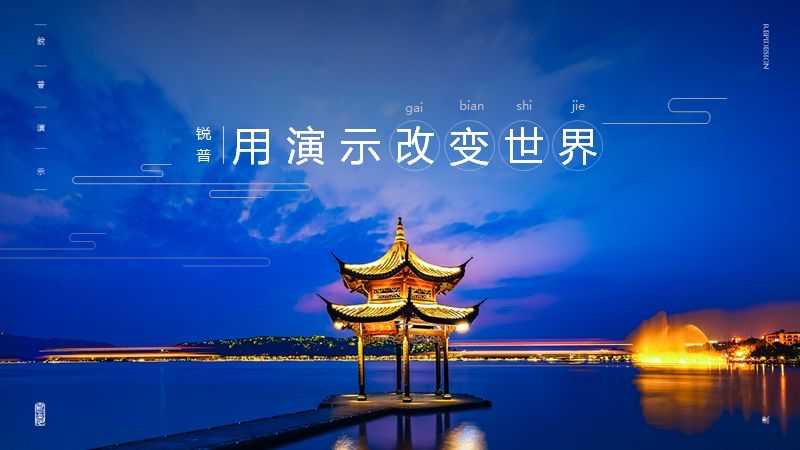
六、中国风意境
有人或许会问，我在设计的时候都用到了传统元素、传统配色、排版等等都没问题，为什么还是做不出那种中国风的感觉？
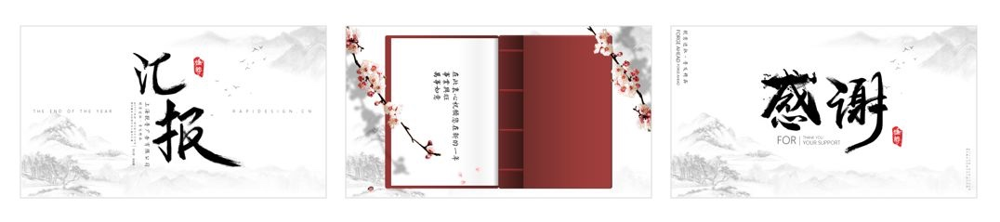
那是因为设计中缺少了意境，从传统画作中可以发现，中国风的画作中经常使用到虚实结合的手法来表达意境，同样设计中也能如此。
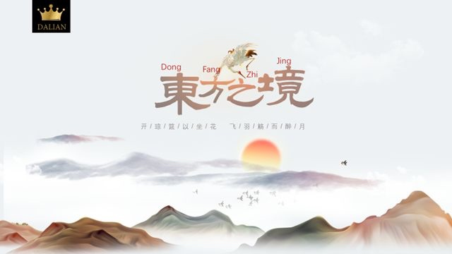
七、中国风素材
素材推荐：
觅元素：www.51yuansu.com
中国色配色网站：http://zhongguose.com/
笔触改造
在遇到要用到书法字体的时候，考虑到市面上大部分的书法字体大多都是版权字，避免踩雷，我们可以尝试通过笔触素材，自己拼字，这有点类似于我们上学时候写毛笔字，一笔一划造出你需要的文字。
以“秋“为例，下图我把拼接的文字拆分开来，清晰的可以看出文字的笔画。
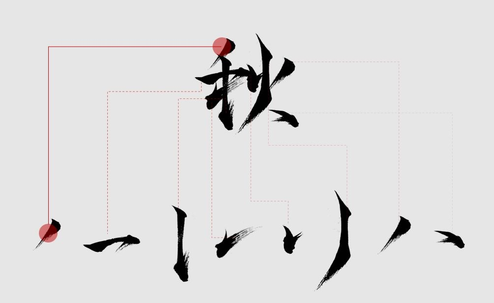